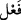
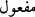
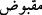
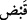
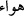
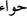

Allah samettir. Lafzatullah mübtedâ, Samed haberdir.
kalıbında olan
kelimesi
kalıbı mânâsındadır. Bu bakımdan
(kabzolunmuş) mânâsında olan
kelimesine benzer. “O zâtı ile müstağnîdir ve ihtiyâç sâhiplerinin maksûdudur. Onun
dışındakilerinin tamamı bütün açılardan ona muhtâcdır” mânâsına gelir. Varlıklar
içerisinde Allah’tan başka Samed yoktur. Samed olan sâdece Allah Teâlâ olduğuna göre
kendisinde samediyyet bulunmayan hiçbir kimse ulûhiyyeti hak edemez. Samed
kelimesinin mârife gelmesi, o zamanki insanların Allah Teâlâ’nın samediyyetini
bilmeleri sebebiyledir. Hâlbuki ahadiyyet öyle değildir. İsm-i celîlin tekrâr edilmesi,
samediyyet ile muttasıf olmayan kimsenin ulûhiyyeti hak etmekten uzak olduğuna işâret
etmek içindir. Daha önce de buna işâret edilmişti.
Cümlenin başında atıf harfinin olmaması, bir önceki cümlenin neticesi gibi olması
sebebiyledir. Önce bütün kemâl sıfatlarını gerektiren ülûhiyetini zikretti. Sonra “birden
çok olma/teaddüd ve herhangi bir şekilde parçalardan oluşma/terekküb” şâibesinden ve
“hakîkatinde ve husûsiyetlerinde ortaklık” tevehhümünden münezzeh olmasını
gerektiren ahadiyyetini zikretti. Daha sonra ise zâtının dışındakilerden müstağnî olması
ve bütün mahlûkâtın var olma/vücûd, var kalma/bekâ ve sâir durumlarda kendine
muhtâc olmasını gerektiren samediyyetini zikretti. Böylelikle de hak yerine konulmuş ve
Allah Teâlâ’nın açık sünnetleri insanlara gösterilmiş oldu. Allah Teâlâ’ya samediyyetin
isbâtı, varlıkta ve zâtının ehadiyyeti îtibâriyle varlığa tâbî olan kemâlâtta ona istinâd
etmemiz sebebiyledir. Yoksa o bu sıfattan müstağnîdir. Hâsılı, samediyyet ahadiyyetten
farklı olarak Allah Teâlâ’nın isim ve sıfatlarında kesreti göz önünde bulundurmayı
gerektirir. Abdüssamed, samediyyete mazhar olan kimsedir ki, belâları def etme ve
hayır mededlerini ulaştırma husûsunda insanlar kendisine yönelirler. Azâbı def edilip
sevâbın verilmesi hususunda da Allah katında bu kimse şefaatçi olur. O, Allah Teâlâ’nın
âleme rubûbiyetinde ona nazarının mahallidir.
Fakir (Bursevî) der ki: İşrak vaktinden sonra gayr-i ihtiyârî içimden şöyle söylemek
geçti: Ezelî, ahadî, ebedî, samedî. Ey Rabbim! Sen ezelîsin, ahadîsin, ebedîsin ve
samedîsin. Ebediyyet, samediyyete nâzır olduğu gibi ezeliyyet de ebediyyete nâzırdır.
Bu da tahlil ve ta‘kîd îtibâriyledir. Ahadiyyet ancak ve ancak kesretlerin izâlesi ile
tecellî eder. Gayb-ı mutlak olan ğınâ (zenginlik, müstağnîlik) makâmına ulaşıldığında
kesret zevâl bulur ve zevâl ezel olur. Bu tahlîldir, fenâdır ve menzilleri geçmektir ve
marsad-ı âlâya ve maksad-ı aksâya ayn ve ilim olarak ulaşmaktır. Samediyyete gelince
o bakâ olan ebediyyet îtibâriyledir. Bu ise tahlîlden sonra ta‘kîdi gerektirir. O da ‘ayn
makâmına nüzul iledir. Bu makâm ise ayn-ı hâricî ve en aşağı mertebesi nâsût olan
şehâdet âlemidir. Velhâsıl, ahadiyyet cem‘, samediyyet ise farktır. Ahadiyyet makâmı,
vâhidiyyet terkipleri cümlesinin kendisinden yayıldığı bölünemez noktadır. Onun
teayyünlerinin ilki, Âdem olup daha sonra Havvâ gelir. Çünkü Havvâ ancak ve ancak
Âdem’in hakîkî teayyününden çıkan havadan sonra zuhûr etmiştir. Onun için de harfi
harfine dönüşmüş
iken
olmuştur.
Ahad isminin husûsiyeti, kudret âleminin ve eserlerinin zuhûr etmesidir. Hatta abdestli